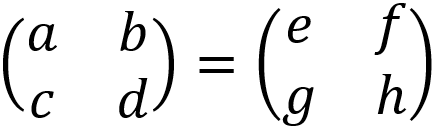

KESAMAAN MATRIKS
Kesamaan matriks adalah dua matriks yang sama. Dua matriks dapat dikatakan sama jika memenuhi dua syarat, yaitu:
1. Kedua ordo matriks sama.
2. Elemen-elemen yang seletak sama.
Misalnya adalah sebagai berikut.
Karena kedua matriks adalah sama, maka a = e, b = f, c = g, dan d = h. Contoh dari kesamaan matriks adalah sebagai berikut.
Kenapa matriks di atas ini bisa disebut sama? Jawabannya gampang guys. Itu karna:
1. ordo matriks A dan matriks B sama, yaitu 3×3.
2. elemen-elemen seletaknya sama persis. Elemen a11 dan elemen b11 punya angka -10; elemen a12 dan elemen b12 punya angka 7;
elemen a13 dan elemen b13 punya angka -4; elemen a21 dan elemen b21 punya angka 9; elemen a22 dan elemen b22 punya angka -6; elemen a23 dan elemen b23 punya angka 3; elemen a31 dan elemen b31 punya angka -8; elemen a32 dan elemen b32 punya angka 5; dan elemen a33 dan elemen b33 punya angka -2.